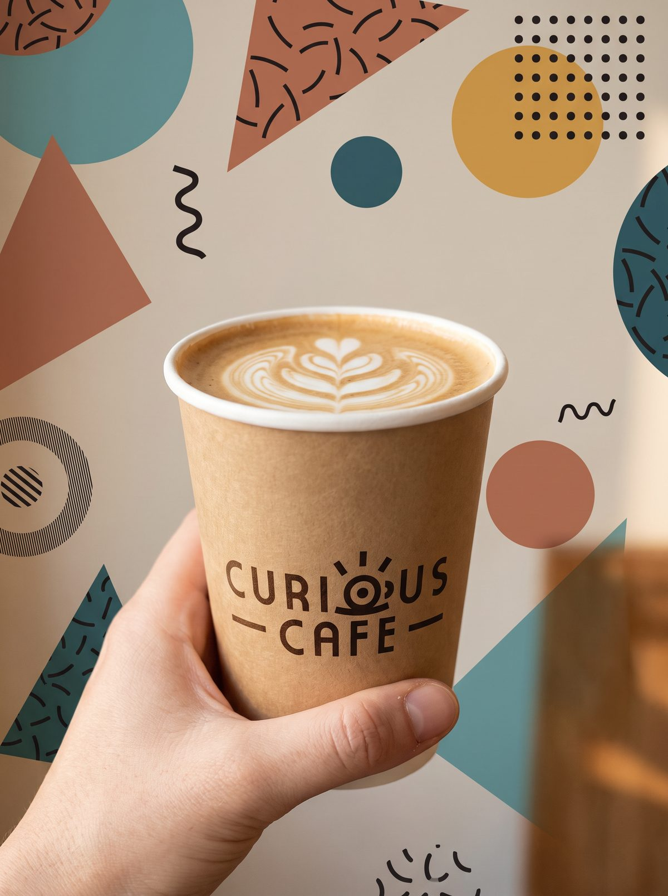

Curious Cafe Branding
A playful and warm brand identity for an independent café that celebrates curiosity, creativity and great coffee.
Curious Cafe needed a brand that felt approachable yet distinctive, a visual identity that would make customers feel invited to explore, linger and discover. The concept was built around the idea of curiosity as a daily ritual.

- Client
- Curious
- Service
- Branding
- Year
- 2023
Where curiosity meets coffee
Warm earthy tones, hand-drawn illustration elements and a friendly logotype create a brand that feels both artisanal and modern. Every touchpoint, from packaging to social media, was considered as part of a cohesive world.
Tools used
- + Adobe Illustrator
- + Photoshop
- + After Effects



Creative process
- 1. Brand Discovery. Workshop sessions with the client to uncover the café's personality, values and what makes it truly unique.
- 2. Visual Identity Design. Logo design, color palette, typography selection and illustration style that captures the playful spirit.
- 3. Brand Application. Full rollout across packaging, menus, cups, social media templates and signage guidelines.


Next project
Period App